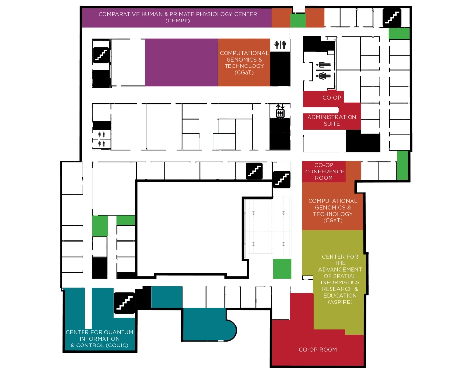

Welcome to the UNM Interdisciplinary Science Cooperative’s Virtual Open House. Until we can safely invite you
into our space within PAÍS we hope that this virtual experience not only teaches you about how our
collaborative is supporting our University’s research mission but also gives you a firsthand look at our state-of-the art facility.
Throughout the month of October, please take time to explore each of our Centers and laboratories, as well as our projects and fellowship.
If you are interested in getting involved in our Team Research Symposium this spring or any of our other upcoming activities, please contact Irene.
CLICK THE TABS BELOW TO TRAVEL THROUGH THE FLOORS OF PAÍS.
ONCE YOU ARE ON YOUR SELECTED
FLOOR, CLICK ON THE COLORED SPACES WITHIN THE FLOOR PLAN TO LEARN MORE ABOUT THEM.

The Co-op Conference Room is a great space for a corporate retreat, a workshop, or even a reception. This bright, light space is the perfect environment for bringing people together in the spirit of collaboration and advancement.

The Co-op Room is a great space for a corporate retreat, a workshop, or even a reception. This bright, light space is the perfect environment for bringing people together in the spirit of collaboration and advancement.


 Launched in 2019 in the brand new state-of-the-art Physics & Astronomy Interdisciplinary Science (PAÍS) facility, the University of New Mexico (UNM) Interdisciplinary Science Cooperative (IS Co-op) is dedicated to fostering relationships across disciplines throughout campus and beyond in order to strengthen our research and educational outcomes.
Launched in 2019 in the brand new state-of-the-art Physics & Astronomy Interdisciplinary Science (PAÍS) facility, the University of New Mexico (UNM) Interdisciplinary Science Cooperative (IS Co-op) is dedicated to fostering relationships across disciplines throughout campus and beyond in order to strengthen our research and educational outcomes.
Within the Co-op, we are proud to have seven Centers and Core Laboratories that work with a diverse community of individual principal investigators, centers, and labs throughout the world in order to broaden their research outcomes. The IS Co-op is dedicated to supporting their efforts by providing them with the resources necessary to develop fresh, bold ideas that inspire and expand upon their research.
From various collaborative spaces designed to inspire teamwork, to events and project support designed to promote and engage new ideas, the IS Co-op is creating a foundation of success for the University - and beyond. The work being done here stands to significantly impact the state of New Mexico: the individuals leading our labs are providing our students an education that is on par with other top Universities throughout the country and those students are leaving equipped to invent the technologies, start the companies, and solve the problems of tomorrow.


PAÍS was built with the intent to bring people together and the spaces within it reflect this throughout. Brightly colored areas within the building, like this one, indicate open spaces that anyone is welcome to collaborate in at any given moment. No reservation required. White boards, tables, and USB ports are all available in these spaces and everyone has access to the Wi-Fi within the building to expand upon their ideas.

Formally established in 2020, the Center for the Advancement of Spatial Informatics Research and Education (ASPIRE) researches methods for the capture, analysis, and representation of spatial data characterizing physical and social phenomena, commonly referred to as Geographic Information Science (GIScience). GIScience is an inherently integrative field of study, relying on virtually all engineering fields for technological and theoretical advancements, and having applications in virtually all sciences.
ASPIRE is currently working with the US Fish & Wildlife Service (USFWS) outreach coordinators to create learning modules and lesson plans to encourage classrooms around the country to participate in the Ducks and Drones project. They hope to build a broad-reaching education and outreach network that the USFWS can use to engage students on other wildlife and technology related topics in the future.
ASPIRE brings together faculty with expertise and cutting-edge research portfolios in a broad range of GIScience sub-fields, including spatial modeling, geo-visualization, remote sensing, and spatial statistics.


CGaT is unique in not only the way it is revolutionizing DNA sequencing, but in how this research is being examined. The analysis of complex genomic data sets has become a powerful approach for understanding how biological systems including molecules, cells, and organisms process inputs, and coordinate responses.


The Center for Quantum Information and Control (CQuIC), as part of the Interdisciplinary Science Co-op, is well positioned as an established hub for Quantum Information Science (QIS) collaboration activities that focus on theoretical and experimental research, education, and workforce development. CQuIC is instrumental in growing New Mexico’s participation in expanding the National Quantum Initiative (NQI) to extend the reach of QIS in pioneering new practical advances in quantum systems. CQuIC continues to strengthen partnerships with adjunct faculty from Sandia National Laboratories and Los Alamos National Laboratory who provide a broader focus for CQuIC’s QIS research as well as employment opportunities for CQuIC graduate students. CQuIC's interdisciplinary reach grows, with new activities in UNM Departments of Chemistry and Chemical Biology, Computer Science, and Electrical and Computer Engineering. CQuIC’s goal is to promote and develop multidisciplinary research and education in QIS at the undergraduate, graduate, and postdoctoral level at UNM.


The CHmPP Center specializes in the development and application of minimally-invasive methodologies for integrating biological samples into research in the behavioral and health sciences. We are a BSL-2 laboratory with the capacity to conduct a wide range of assay and sample extraction procedures enabling the analysis of blood and blood spots, urine, feces, saliva, and hair, as well as plant and skeletal material. We serve as a center for student training and provide cost-effective fee-for-service work for a variety of collaborators in fields including human biology, anthropology, psychology, ecology, and the biomedical sciences.